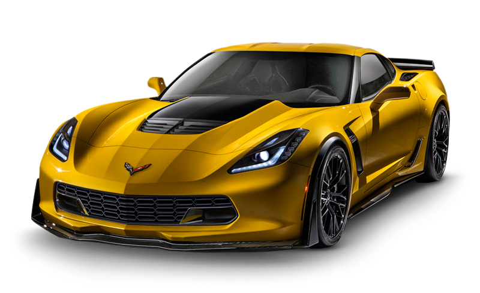
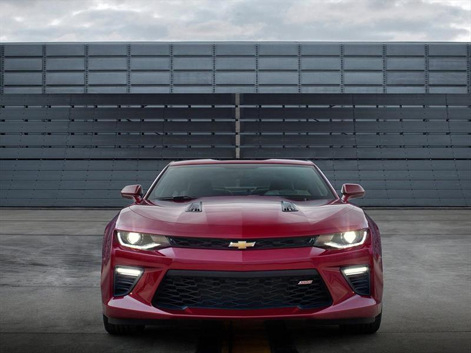
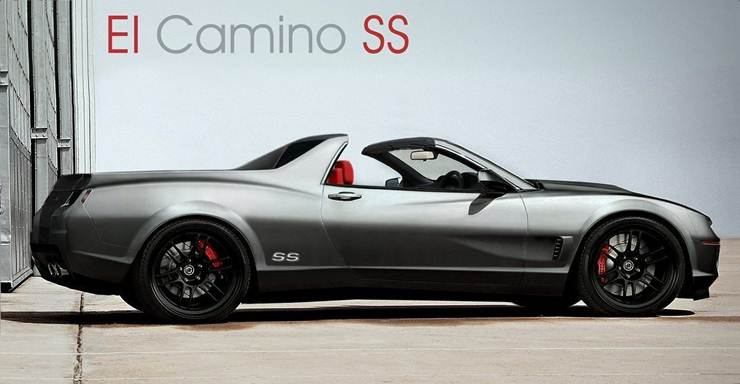
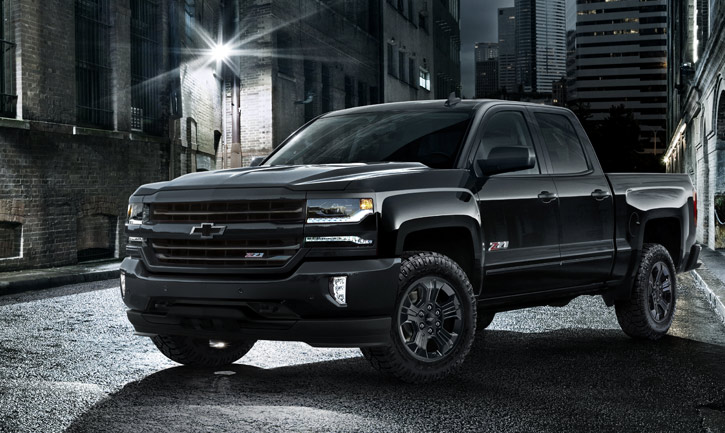
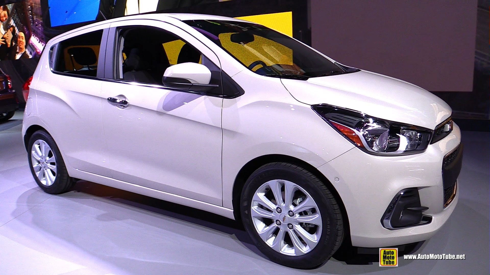
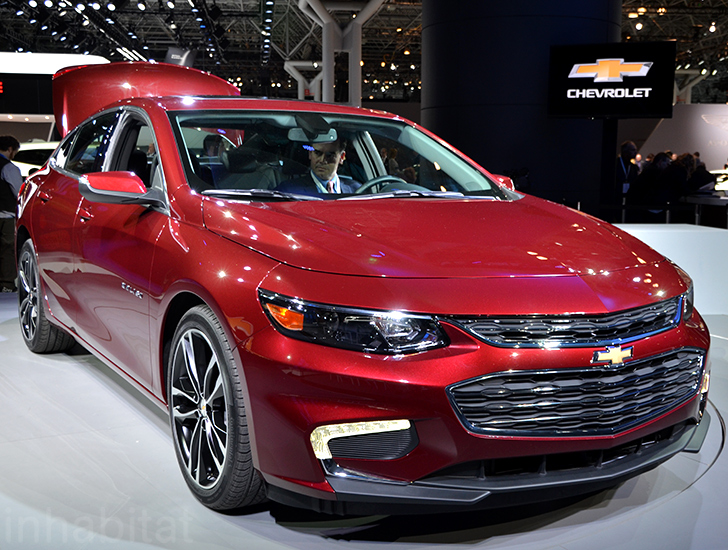
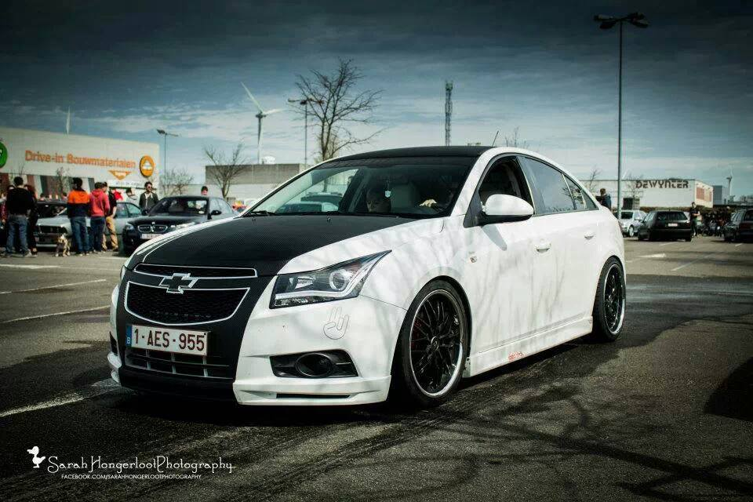
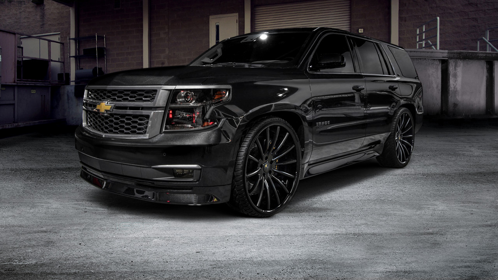
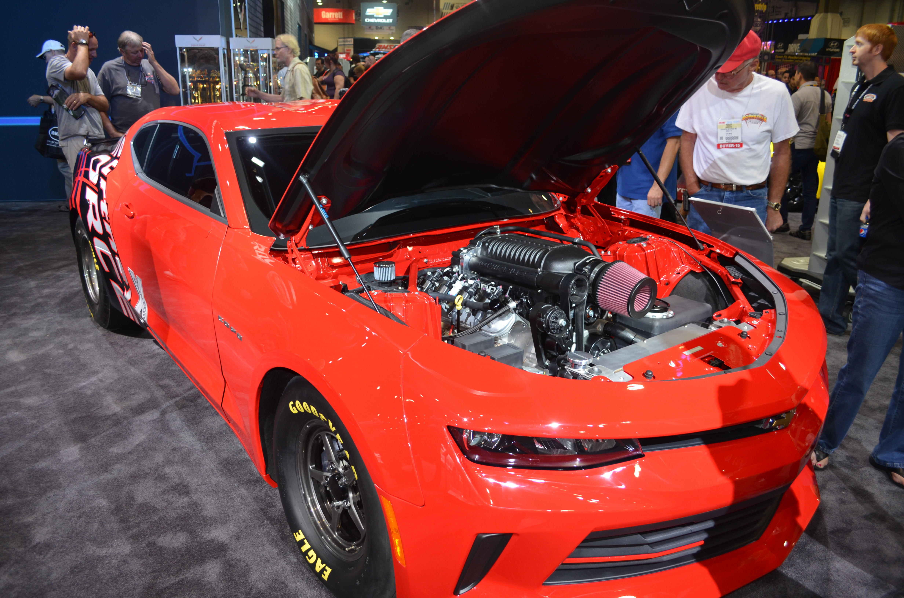

1.-CORVET=!
El Chevrolet Corvette es un automóvil deportivo fabricado por la marca estadounidense Chevrolet desde el año 1953. Es fabricado en Bowling Green, Kentucky, donde también se encuentra el Museo Nacional de Corvette. Anteriormente era fabricado en Flint, Míchigan y San Luis, Misuri. Fue el primer deportivo construido por Chevrolet.
Existen siete generaciones de este deportivo estadounidense: C1 (1953-1962), C2 (1963-1967), C3 (1968-1982), C4 (1983-1996), C5 (1996-2004), C6 (2003-2013) y C7 (2013-presente). Se fabrican diversas versiones con diferentes funciones dentro de cada generación. A lo largo de los años, las versiones del coche han ganado premios de revistas como Motor Trend y Car and Driver, y de organizaciones como la Sociedad de Ingenieros Automotrices, y se ha utilizado a lo largo de los años como coche de seguridad en las 500 millas de Indianápolis desde 1978.
El Corvette de primera generación fue diseñado por Harley Earl y presentado sin mucha acogida el 17 de enero de 1953, motivo por el cual casi no salió a producción.
Si bien se vende bajo la marca Chevrolet en los Estados Unidos y otros lugares en el mundo, también se vende bajo su propia marca Corvette en Europa y Japón, donde es bastante raro este modelo. El automóvil se construye en versiones coupé y descapotable; la posibilidad de una versión sedán también ha sido considerada por los ejecutivos de GM.

2.-CAMARO=
El Chevrolet Camaro es un popular automóvil deportivo producido por el fabricante estadounidense Chevrolet GM. Se clasifica como un pony car y en algunas versiones también como un muscle car. El Camaro surgió como la respuesta de General Motors a su rival más digno durante esta época: el Ford Mustang.
En plena era de los "pony cars", Chevrolet presentó este modelo en dos versiones: el camaro Rally Sport (RS) y el camaro Super Sport (SS). Este último contaba con un V8 de 5.7 litros, y otro motor opcional de 6,5 litros con 396 plgs³, estaban hechos para la clase de cliente estadounidense apasionado por la velocidad, con la idea de "correr en el verano y guardarlo en el invierno", ya que se fabricaba en versión descapotable como en coupé.
Esta tradición jamás continuó a pesar de la gran decadencia a mediados de los años 1970, con la subida del precio de los combustibles. Este modelo se hizo famoso en las carreras de Trans-Am y la National Hot Rod Association.

3.-EL CAMINO=
El Camino es una parte más de la zaga Chevrolet Vs Ford.
En 1957 Ford presento la Ranchero, un auto-camioneta que tuvo muy buen resultado comercial.
Fue entonces que la gente de Chevrolet comenzaron a diseñar un vehículo para competir con su eterno adversario. Así fue que, basados en un Impala construyeron esta camioneta a la que denominaron “El Camino” un nombre en español, las razones? no las conocemos. La traducción en ingles es The Road…
1959 Compartió el estilo salvaje del Impala, incluidas sus conocidas luces traseras y alas “ojos de gato”. La parte delantera era el Impala tal cual, como la mayoría de sus acabados interiores.
Producción: 22.246 Unidades.

4.-SILVERADO=
La Chevrolet Silverado, es una camioneta de tamaño completo, fabricada por la división Chevrolet de General Motors en Estados Unidos, Canadá, México, y Venezuela.
La Chevrolet Silverado es la segunda camioneta de trabajo ligero de mayor venta, por detrás de los vehículos de Ford F-Series. La Silverado y su camión hermana, la GMC Sierra, son prácticamente idénticas, pero la Sierra ofrece una selección un poco más amplia de paquetes de opciones. La Silverado es conocida por su entrada en el campo híbrido, y por sus líneas limpias y un estilo sencillo.

5.-SPARK =El Chevrolet Spark es un automóvil de turismo del segmento A producido por el fabricante surcoreano GM Daewoo desde el año 1998. Es un cinco plazas con motor delantero transversal, tracción delantera y carrocería de cinco puertas. Su diseño se basó en el prototipo Italdesign Lucciola1 2 diseñado por Giorgetto Giugiaro proyectado en un principio como futuro sustituto del Fiat Cinquecento.
El modelo original fue conocido inicilamente como Daewoo Matiz y Chevrolet Matiz comenzando en 2000 según el mercado. Con la quiebra inminente de Daewoo, esta marca se reserva al mercado surcoreano, y el modelo pasó a ser conocido como un producto de otras marcas del grupo industrial estadounidense General Motors, siendo ya la segunda generación vendida como Chevrolet Matiz (Europa y México), Chevrolet Spark (Norte y Sudamérica) y Pontiac G2 (México). La tercera generación, fue lanzada en 2009 como nuevo Spark; mientras en Chile, Colombia y México, cuando inicia su comercialización en 2010, se le conoce como Spark GT.3
El estilo original del Matiz recibió algunos cambios cosméticos en el 2000 (M150). Para el 2009, el Matiz es producido por un buen número de fabricantes que tienen una licencia sobre el diseño del vehículo. Algunos de estos fabricantes incluyen Formosa Automobile Corp. en Taiwán y Chevrolet, quien ha rebautizado al automóvil como Spark y lo vende en Europa, Sudamérica y Asia.4
Una versión todo eléctrica, el Chevrolet Spark EV, fue lanzada en Estados Unidos en junio de 2013. The Spark EV es el primer coche de pasajeros todo eléctrico comercializado por General Motors desde el EV1 de 1999.5 6

6.-
EL CHEVROLET MALIBU=es el nombre con el que se conoce a una serie de automóviles de turismo, producidos por el fabricante norteamericano General Motors, para la marca Chevrolet. El Malibu comenzó como un nivel de equipamiento del Chevrolet Chevelle, pero se convirtió en su propia línea de modelos en 1978. Originalmente un tracción trasera tamaño mediano entre el Chevy II Nova y el Chevrolet Impala, GM revivió el nombre de Malibu como un coche de tracción delantera en 1997. El nombre Malibu», se debe a una localidad ubicada en el estado de California, Estados Unidos. Estos modelos, fueron muy populares en América del Norte, siendo comercializados en Estados Unidos, Canadá y México, pero también llegó a Israel, donde también se comercializa actualmente.

7.-
EL CHEVROLET CREZE=(Holden Cruze o Daewoo Lacetti Premiere, según los distintos mercados), es un automóvil de turismo del segmento C, producido por el fabricante norteamericano General Motors para su marca Chevrolet, siendo además vendido bajo las marcas Holden y GM Daewoo según el mercado donde es ofrecido. Se trata de un sedán desarrollado para su producción a nivel global, representando el segundo producto de la marca Chevrolet (después del Aveo) en ser vendido a nivel mundial, dando reemplazo a otros productos de la General Motors producidos y vendidos bajo otras marcas pertenecientes a su corporación.
Fue presentado en el Salón del Automóvil de París del año 2007, donde apareció bajo el nombre de Daewoo Lacetti Premiere y su desarrollo se dio como resultado de la colaboración entre la central estadounidense y su filial surcoreana. A partir del año 2009 sería oficialmente presentado bajo la marca Chevrolet y comenzaría a ser producido en distintos mercados bajo esa marca, con excepción del mercado oceánico, donde fue presentado exclusivamente bajo la marca australiana Holden.
El Cruze, fue presentado con la intención de reemplazar a nivel mundial a los distintos modelos del segmento C, ofrecidos bajo la marca Chevrolet en los distintos mercados del mundo. De esta forma, daría reemplazo a la primera generación del Chevrolet Cobalt en el mercado de América del Norte, al Chevrolet Lacetti en Europa, al Chevrolet Optra en los mercados de Canadá, Región andina, Japón, México y Sudeste asiático, y al Chevrolet Astra (modelo derivado del alemán Opel Astra) en el Mercosur.
En cuanto a su posición en el mercado, dentro del abanico de productos de Chevrolet a nivel global, el Cruze se ubica en el segmento C, posicionándose entre el Chevrolet Aveo (o Sonic según el mercado donde es ofrecido) y el Chevrolet Malibu. Asimismo, son citados como rivales directos de este coche, el Ford Focus, el Toyota Corolla, los tándem 308/408 de Peugeot y Mégane III/Fluence de Renault, el Honda Civic y el Volkswagen Vento entre otros.

8.-SUBURBAN=
Chevrolet Suburban es una camioneta utilitaria de la compañía Chevrolet. El modelo es el más antiguo que continúa en producción, ya que data de 1934. Anteriormente, el modelo se denominaba GMC Suburban. El Suburban ha sido producido por Chevrolet, Holden y GMC, hasta que la versión de GMC fuera renombrada al actual GMC Yukon XL.

9.-COPO, "Central Office Production Order", es el apelativo que recibe desde hace casi 50 años la variante más extrema del mítico Chevrolet Camaro y en este SEMA no podía faltar su nueva versión.
El Chevy Camaro COPO viene a ser el Camaro más "bestia" sobre la faz de la tierra. Diseñado en colaboración con Courtney Force, una joven piloto de Drag Race que compite en la NHRA, "National Hot Rod Association".
Este Camaro, basado en la sexta generación del deportivo americano, destaca por su llamativo exterior en color rojo y negro, sus anchos pasos de rueda y, sobre todas estas cosas, el enorme capó que esconde la bestia.
